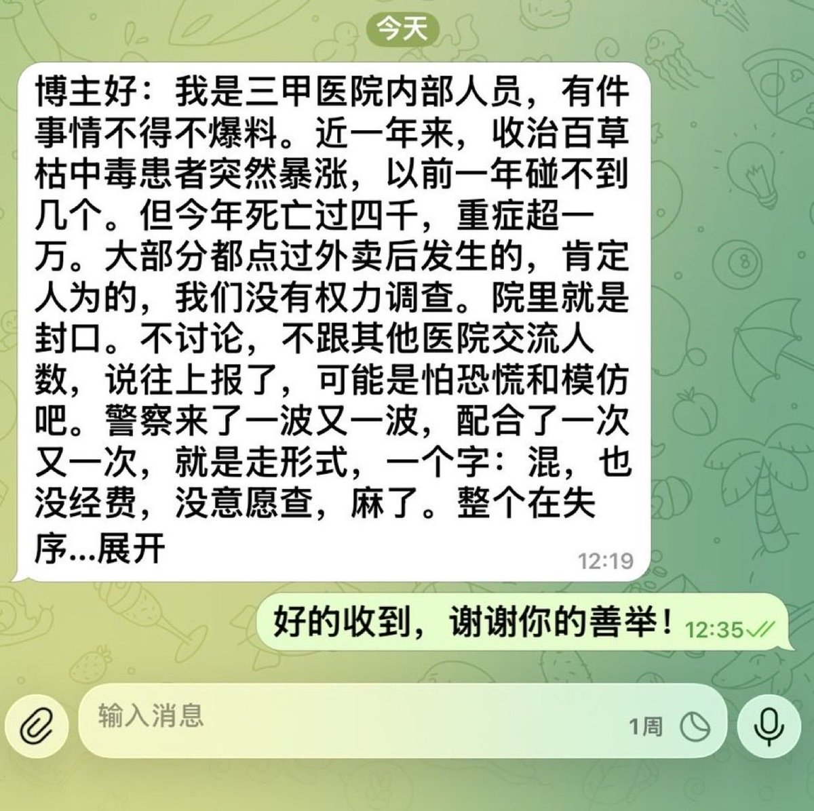

首先，百草枯已经买不到了，不可能有这种完整包装的商品；其次，百草枯添加了臭味剂苦味剂，哪怕0.1ml，也可以完全造成食物味道剧烈变化；然后，如果一家三甲医院因为百草枯死亡过四千，可以料想全国有多少，这种量级不可能瞒得住；最后，telegram你发多长，它也不会出现“展开”。


外卖员百草枯互害事件陆续有更多爆料出现，以下是来自罗翔老师爆料：我是三甲医院内部人员，有件事情不得不爆料。近一年来，收治百草枯中毒患者突然暴涨，以前一年碰不到几个。但今年死亡过四干，重症超一万。大部分都点过外卖后发生的，肯定人为的，我们没有权力调查。院里就是封口。不讨论，不跟其他 https://t.co/fAAXbBimfY https://t.co/Vy1qmzWIGW